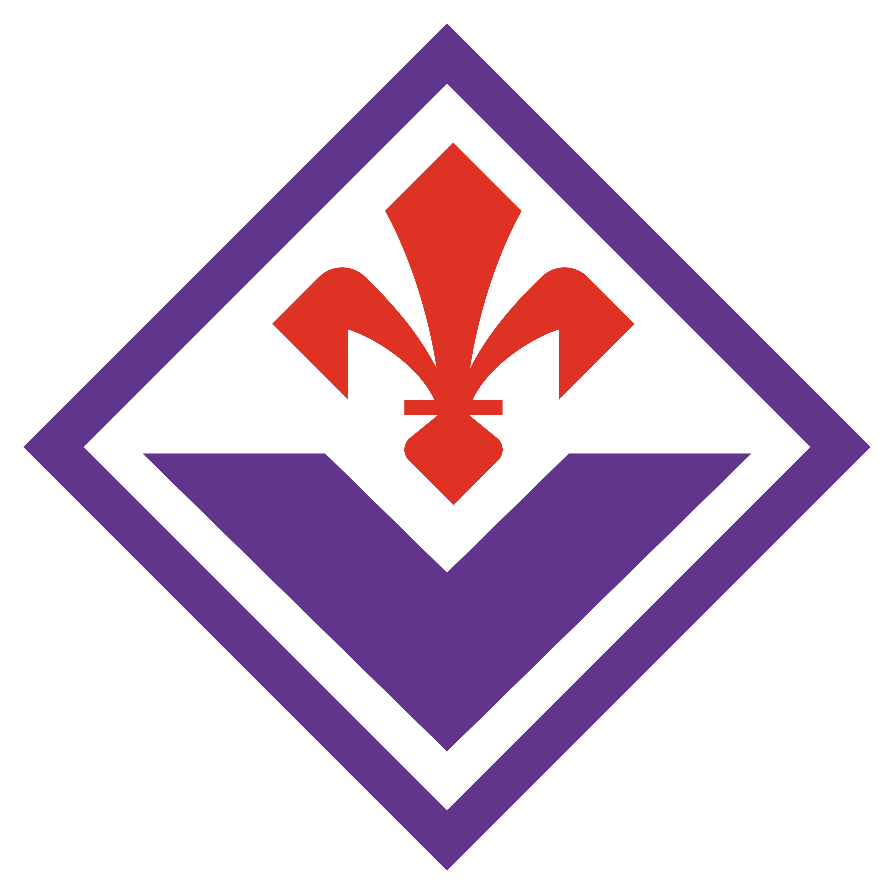

The viola diamond with the red Florentine lily. Keep clear space ≥ 25% of crest width. Never recolor the lily or stretch the lozenge.
assets/fiorentina-crest.png · transparent PNG
assets/fiorentina-crest.png